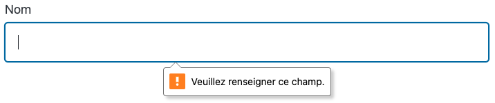
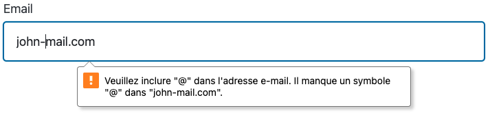
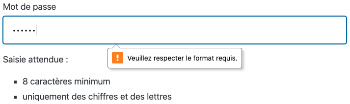

3 - Les formulaires en PHP : Vérification et sécurisation des données
Introduction
Sécuriser les données d'un formulaire est crucial. Les formulaires sont souvent la principale porte d'entrée de nombreux types d'attaques, faisant d'eux les têtes de liste en matière de failles de sécurité d'un site web.
La sécurisation contribue également à respecter les réglementations sur la protection des données, à protéger la vie privée et à renforcer la confiance des utilisateurs.
La partie « Côté serveur » va te prendre un peu de temps pour bien en saisir les contours. Arme-toi de patience et de courage 🙂.
🤓 À la fin de cette quête, tu seras en mesure de :
- ✅ Nettoyer et vérifier la saisie de l'utilisateur
- ✅ Afficher les erreurs en cas de saisie non conforme
- ✅ Effectuer une redirection après traitement
Sommaire
Validation des saisies
Mettre en place un formulaire sur une application web implique des précautions.
- Soit l'utilisateur peut se tromper et saisir des informations erronées, comme saisir son âge dans le champ prévu pour renseigner sa profession.
- Soit l'utilisateur peut tenter de nuire à ton site et utiliser les champs de formulaire pour un autre usage que celui initialement prévu.
Nous allons voir les premières actions à mener côté client et côté serveur pour répondre à ces problématiques et garantir l'intégrité des saisies.
Côté client
Contrôles simples avec les attributs
Au moment de la soumission du formulaire, les navigateurs effectuent naturellement un premier contrôle des données saisies dès lors que les attributs des champs à remplir sont utilisés de manière appropriée.
Il est ainsi possible de rendre un champ obligatoire en lui ajoutant l'attribut required.
<input type="text" id="name" name="name" required>

Ou bien s'assurer que la saisie corresponde au bon format lorsque l'utilisateur doit saisir son email grâce à l'attribut type="email".
<input type="email" id="email" name="email">

Contrôle avancé avec pattern
L'attribut pattern pourra quant à lui contenir une expression régulière ou (expression rationnelle) permettant de préciser les caractères autorisés, la longueur de la chaîne ou encore la séquence attendue.
Dans l'exemple ci-dessous, on impose à la saisie du mot de passe une chaîne de 8 caractères minimum composée exclusivement de chiffres ou de lettres (majuscules ou minuscules).
<label for="password">Mot de passe</label>
<input
pattern="[a-zA-Z0-9]{8,}"
type="password"
id="password"
name="password"
required>
<p>Saisie attendue :</p>
<ul>
<li>8 caractères minimum</li>
<li>uniquement des chiffres et des lettres (majuscules ou minuscules)</li>
</ul>

Les navigateurs ne pouvant être très explicites, il est alors très important d'indiquer à l'utilisateur le détail du format attendu. Convenons qu'il est assez agaçant de s'entendre dire qu'on fait mal sans avoir été informés au préalable de ce qu'il fallait faire 🤓.
Exemples d'expressions couramment utilisées dans les champs de formulaires.
Contrôles avec Javascript
Il est également possible de réaliser des contrôles sur la conformité des données avec JavaScript, que ce soit grâce à du code que tu écris toi-même ou à l'aide de librairies dédiées. L'étude de Javascript dans ce cas d'usage nécessiterait toute une quête voire plusieurs et cela ne fait pas partie des objectifs de cette celle-ci 😉.
⚠️ Non fiable et insuffisant
Si le contrôle des informations saisies côté client est important, car il améliore l'expérience des utilisateurs et rend l'usage de tes formulaires plus facile, on ne peut en aucun cas le considérer comme fiable et suffisant.
En effet, il est parfaitement possible d'envoyer les mêmes requêtes HTTP sans avoir à passer par un navigateur (avec un autre client HTTP comme par exemple curl, Postman ou ThunderClient), ou d'outrepasser les contrôles en modifiant tout simplement le code source d'une page via l'inspecteur de code.
Côté serveur : avec PHP
En général, on préfèrera cumuler les deux méthodes, back-end (côté serveur) et front-end (côté client), mais si on doit n’en choisir qu'une, c'est la vérification coté serveur à l'aide de PHP qui sera toujours privilégiée.
On le redit, c'est le seul moyen sûr pour valider les données, car un utilisateur malveillant pourrait aisément détourner les vérifications côté client.
La mise en place
Pour faciliter la démonstration et les tests, aucune vérification côté client n'a été mise sur les inputs du formulaire de l'exemple ci-dessous.
Fais-en de même pour pouvoir tester facilement, mais n'oublie que dans un cas réel d'implémentation, il faudra penser à ajouter l'attribut required sur les champs obligatoires ainsi que le type approprié si besoin.
Reprenons le formulaire que nous avons utilisé sur les précédentes quêtes, mais cette fois-ci en retirant l'attribut action de sorte qu'il soit soumis sur la page courante, toujours en POST.
<form method="post">
<label for="firstname">Prénom</label>
<input type="text" id="firstname" name="firstname">
<label for="email">Email</label>
<input type="text" id="email" name="email">
<input type="submit" value="Envoyer">
</form>
Les étapes
Chaque donnée provenant de l'utilisateur doit être vérifiée et validée. Ces validations peuvent varier en fonction des besoins (longueur d'une chaîne, nombre positif, format de date, format d'email ou d'URL, etc.) et quelques précautions sont à prendre pour accéder à ces valeurs.
Regardons cela étape par étape.
- 1
La requête provient-elle d'une soumission en POST ?
Pour traiter les données de l'utilisateur, il faut d'abord s'assurer que la requête HTTP est issue d'une soumission de formulaire.
Lorsque tu veux afficher une page, ta requête est en méthode GET. C'est le cas dans notre exemple pour afficher le formulaire. Tandis que lorsque tu soumets un formulaire, ta requête est très souvent en méthode POST. Nous pouvons utiliser la superglobale
$_SERVERpour distinguer ces deux cas de figure.$_SERVERest un tableau avec des informations sur le serveur et la requête HTTP. Dans ce tableau se trouve la cléREQUEST_METHODqui nous permet de savoir quelle méthode HTTP est utilisée pour la soumission du formulaire. On peut alors mettre en place cette condition en début de fichier, avant le contenu HTML :php<?php if ($_SERVER['REQUEST_METHOD'] === 'POST') { //traitement des données de l'utilisateur } ?> <!DOCTYPE html> <html lang="fr" class="pico" data-theme="light"> <head> <meta charset="UTF-8"> <meta name="viewport" content="width=device-width, initial-scale=1.0"> <title>Formulaire de contact</title> <link rel="stylesheet" href="https://cdn.jsdelivr.net/npm/@picocss/pico@2/css/pico.min.css" /> </head> <body> <main class="container"> <h1>Laissez-nous votre message</h1> <form method="post"> <label for="firstname">Prénom</label> <input type="text" id="firstname" name="firstname"> <label for="email">Email</label> <input type="text" id="email" name="email"> <input type="submit" value="Envoyer"> </form> </main> </body> </html>Note : le framework minimaliste Pico CSS a été ajouté pour un rendu du formulaire plus agréable. N'hésite pas à consulter la documentation si tu souhaites en savoir plus sur son utilisation 🤓.
- 2
Nettoyage avec trim
Il arrive que des espaces soient insérés par erreur en début ou fin de saisie par l'utilisateur. Sur certains champs (emails, dates…) cela pourrait générer des erreurs dans l'exploitation de la donnée. On peut se servir de la fonction trim() pour effacer ces espaces de part et d'autre des données saisies par l'utilisateur. Par exemple
trim(" Valeur ")renverra"Valeur".phpif ($_SERVER['REQUEST_METHOD'] === 'POST') { $firstname = trim($_POST['firstname']); $email = trim($_POST['email']); }Si le formulaire contient de nombreux champs, le nettoyage risque d'être long et répétitif. Il est possible d'automatiser ce nettoyage à l'aide de la fonction array_map() comme ceci :
phpif ($_SERVER['REQUEST_METHOD'] === 'POST') { $contact = array_map('trim', $_POST); }Le tableau
$contactainsi créé est une copie du tableau$_POSTauquel a été appliquée la fonctiontrim()par récursivité grâce à la fonctionarray_map(). Il contient donc bien les données nettoyées de l'utilisateur et c'est ce tableau qui sera à présent exploité dans notre script PHP. - 3
Vérification d'un champ obligatoire
Juste avant d'entamer cette partie, prenons soin de déclarer une variable pour stocker nos messages d'erreurs le cas échéant. Il pourra sans doute y avoir plusieurs erreurs de saisie. Créons un tableau pour accomplir cette tâche.
php$errors = []; if ($_SERVER['REQUEST_METHOD'] === 'POST') { $contact = array_map('trim', $_POST); }Bien, comment vérifier la conformité d'un champ obligatoire à présent ? Dans notre exemple, les champs firstname et email sont obligatoires. Côté serveur cela se traduit par :
- Le champ firstname est-il absent en tant qu'index du tableau
$contact? - Le champ firstname est-il vide ?
- Si l'une de ces deux conditions est remplie, alors il y a une erreur qu'on indiquera à l'utilisateur.
- Idem pour le champ email et ainsi de suite…
Écrivons cela en PHP :
php$errors = []; if ($_SERVER['REQUEST_METHOD'] === 'POST') { $contact = array_map('trim', $_POST); if (empty($contact['firstname'])) { $errors[] = 'Le prénom est obligatoire'; } if (empty($contact['email'])) { $errors[] = 'L\'email est obligatoire'; } }Remarques :
- L'utilisation de la fonction empty() revient à faire cette double vérification « le champ firstname est-il absent OU le champ firstname est-il vide ? » :
phpif (!isset($contact['firstname']) || $contact['firstname'] === '')$errors[] =signifie « on ajoute au tableau$errorsle message : Le prénom est obligatoire. »
- Le champ firstname est-il absent en tant qu'index du tableau
- 4
Validation par critère
Il faut être le plus rigoureux et exhaustif possible dans ces validations. Sois créatif et n'hésite pas à exploiter toute la richesse de PHP et des fonctions disponibles pour accomplir cette mission. Voici quelques exemples.
- Pour vérifier qu'un mot de passe a bien une longueur minimum de huit caractères, on pourra utiliser la fonction count(), comme ceci par exemple :
phpif (count($contact['password']) < 8) { $errors[] = 'Le mot de passe doit faire au moins 8 caractères'; }- La fonction filter_var() peut également s'avérer utile dans bien des situations. Pour notre champ email, voici ce qu'on peut mettre en place :
phpif (filter_var($contact['email'], FILTER_VALIDATE_EMAIL) === false) { $errors[] = 'L\'email n\'est pas valide'; }Consulte la documentation pour mieux comprendre les subtilités de cette fonction.
- 5
Affichage des erreurs
Des messages ont été ajoutés au tableau
$errors? Autrement dit « le tableau$errorsn'est pas vide ». Affichons-les à l'utilisateur. Il suffit de choisir l'emplacement le plus approprié dans notre page HTML, avant le formulaire par exemple. Une simple boucleforeachfera l'affaire :php<h1>Laissez-nous votre message</h1> <?php if (!empty($errors)) : ?> <!-- Si il y a des erreurs, on les affiche ici --> <h2>Merci de corriger les erreurs suivantes.</h2> <ul> <?php foreach ($errors as $error) : ?> <li><?= $error ?></li> <?php endforeach; ?> </ul> <?php endif; ?> <form method="post"> <label for="firstname">Prénom</label> <input type="text" id="firstname" name="firstname"> <label for="email">Email</label> <input type="text" id="email" name="email"> <input type="submit" value="Envoyer"> </form> - 6
Pré-remplir le formulaire en cas d'erreur
Si jamais l'utilisateur a fait une erreur dans le remplissage du formulaire, nous voulons toutefois maintenir les champs pré-remplis pour qu'il n'ait pas à retaper l'intégralité des informations qu'il avait déjà entrées précédemment (et oui, nous pensons à tout, même à l'UX et à l'ergonomie de notre site).
Pour cela, nous pouvons utiliser l'attribut
valuedes champs<input>afin de les pré-remplir par la valeur contenue dans la superglobale$_POST. Il faut aussi vérifier que cette dernière existe, et si ce n'est pas le cas, laisser une chaîne vide comme valeur.Le Null Coalescing operator (??) est très utile dans ce cas de figure. Il va nous permettre de vérifier si la valeur existe. Si c'est le cas, la valeur est retournée, sinon c'est une valeur par défaut qui sera renvoyée.
Par exemple :
php<?= $userName ?? 'John Doe' ?>Ici, si la variable
$usernameexiste et n'est pas nulle, nous affichons sa valeur, dans le cas contraire, nous affichons John Doe.Attention, l'attribut
valuen'existe pas partout, dans le cas par exemple d'un<textarea>, tu devras plutôt mettre ton code PHP entre les balises :php<textarea name="myMessage"><?= $_POST['myMessage'] ?? '' ?></textarea>Pour notre exemple, cela donne :
php<label for="firstname">Prénom</label> <input type="text" id="firstname" name="firstname" value="<?= $contact['firstname'] ?? '' ?>"> <label for="email">Email</label> <input type="text" id="email" name="email" value="<?= $contact['email'] ?? '' ?>"> - 7
Dernière étape : redirection
Revenons à la section des vérifications pour la dernière étape. Si le tableau
$errorsest vide, autrement dit, s'il n'y a pas d'erreur, les données sont traitées (envoi d'un mail, enregistrement dans une base de données, etc.).Ensuite, nous souhaitons rediriger l'utilisateur vers une autre page. Pour y parvenir, nous utiliserons la fonction header(), qui possède une syntaxe un peu particulière.
php$errors = []; if ($_SERVER['REQUEST_METHOD'] === 'POST') { $contact = array_map('trim', $_POST); if (empty($contact['firstname'])) { $errors[] = 'Le prénom est obligatoire'; } if (empty($contact['email'])) { $errors[] = 'L\'email est obligatoire'; } if (filter_var($contact['email'], FILTER_VALIDATE_EMAIL) === false) { $errors[] = 'L\'email n\'est pas valide'; } // Si je n'ai aucune erreur dans le formulaire : if(empty($errors)) { // Traitement du formulaire // ... // Puis redirection de l'utilisateur vers une page de résultat 'result.php' header('Location: result.php'); exit(); } }Dans l'exemple, la page de redirection est result.php, mais on pourrait aussi rediriger vers la même page. Quel intérêt ? 😳
Le but de cette redirection est de générer une nouvelle requête HTTP en GET pour que la condition en début de script
if ($_SERVER['REQUEST_METHOD'] === 'POST')ne puisse pas être immédiatement réévaluée.En effet, si la redirection n'est pas faite et que l'utilisateur actualise la page, le navigateur soumet à nouveau le formulaire (en POST donc, et avec les mêmes données) et une fenêtre de confirmation apparaît. Il ne faut surtout pas se retrouver dans ce cas de figure car l'utilisateur effectuerait une seconde soumission identique (imagine si c'est un formulaire de paiement...).
Remarque : à cause de cette redirection, tu te rends compte que la saisie de l'utilisateur n'est plus disponible pour lui afficher un message personnalisé via une page de traitement comme tu as pu le faire sur une précédente quête. Nous apprendrons dans une prochaine quête comment régler ce problème lorsque nous aborderons les sessions en PHP. Patience 😇.
Pour aller plus loin
Si tu souhaites approfondir tes connaissances sur le sujet, tu peux consulter les différentes ressources ci-dessous. Elles peuvent t’aider à comprendre certaines notions encore floues.
Une description des types de failles que comporte l'utilisation d'un formulaire.
Si tu veux tout savoir sur les contraintes de validation coté front-end, je t'invite à lire cette série d'articles.